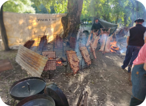
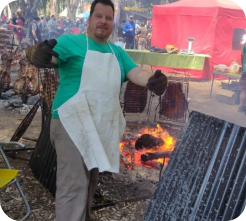

El Hogar de Niñas dijo presente en el aplauso al asador.
Queremos agradecer a quienes colaboraron para que el Hogar pueda participar nuevamente el domingo en el Aplauso al Asado
A todos los que ayudaron en la compra de los insumos necesarios: #cementosavellaneda, María Emilia y María Magdalena Mieri, Olga y Alfredo Kegreiss, Carlos Guarrochena, Jorge Vidal, Tite Miresky, Guillermina Mieri, Gabriela Ferraro, Marta Musumecci, Olga Araujo, Nene Singla, Alicia Jauregui, Ana Spinella, Clyde Singla, Mario y Santiago Chiappini, Marta Tasso, Fabricio Dilasio, Sergio Faustino, Dalton Jauregui, y sobre todo, a Luciano Martins.

Y a todos los que trabajaron y nos brindaron su tiempo con tanto amor y entusiasmo: Melisa Jauregui, Micaela Olivetto, Pablo Rodriguez, Hector Pezzali, Marcelo Secondi, Vladimir Cruz, Chichi y Hugo Stabile, Luis Lopez, Mario Benito, Santiago Rando, Asociación de Bomberos Voluntarios de Olavarría, Gustavo Marghella, Mariel Lapieza, Alicia Althabe, Stella Couto; y muy especialmente a los incondicionales María Moreira, Jorge Roger y Abel Melón. Y a Sebastián Roger, nuestro parrillero oficial, gracias por poder contar siempre con vos.
De corazón, gracias!